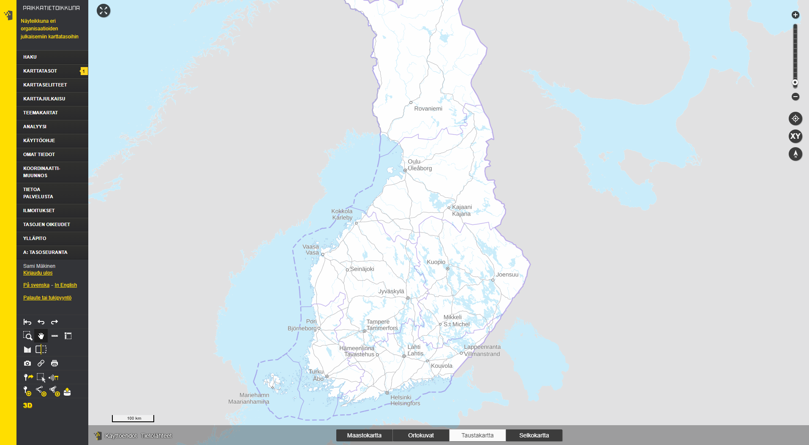
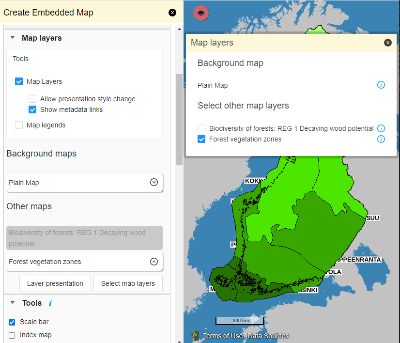
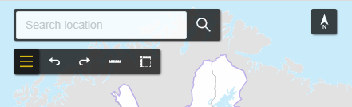
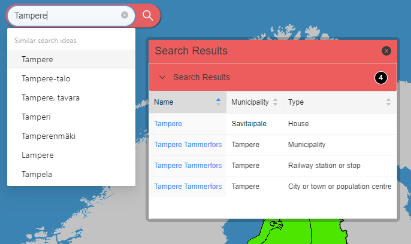
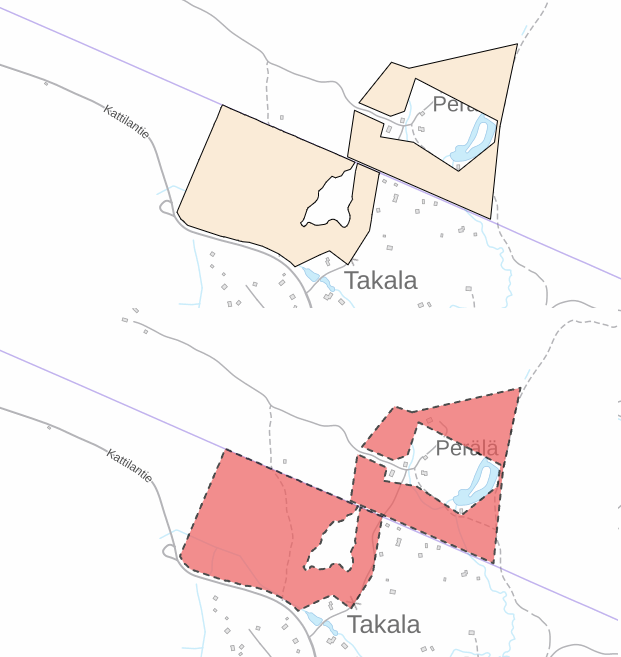

Year in review 6/2023
Sami Mäkinen - NLS Finland
National geoportal Finland

History in nutshell
- National geoportal
- Open source it
- ???
- Profit
### Oskari
- Server: Java built with Maven
- Frontend: JS built with Webpack
- Requires:
- PostgreSQL (PostGIS)
- Redis
- (Spatial Data Infrastructure)
Application components
- For building web mapping software
- APIs and extension points on multiple levels
- oskari-server
- sample-server-extension
- oskari-frontend
- oskari-frontend-contrib
- sample-application
### Main points
- Publisher / embedded maps
- Theming / Customization
- Mobile support
- Other stuff
Publisher / Layer listing

Publisher / Theming

- Placement restraints removed
- Tools reorganized (new panels -> React.js)
### Embedded maps
- Initial code versioning
- RPC draw features:
- limits for area/line
- buffers for all features
- Metadata:
- links on layer listing
- programmatic access (RPC)
### Publisher for devs
- Publisher tool [API improved](https://oskari.org/documentation/features/publisher/tools)
- Most tools rewritten (cleaned up)
- Map plugin [API improved](https://oskari.org/documentation/features/map/mapplugin)
- Oskari.dom.isEmbedded()
- Most plugins rewritten:
- publisher functions
- lifecycle functions
- jQuery -> React
- png -> svg
Search improvements

- Config to enable "channel" toggles
- User-friendly names for channels
### Metadata search
- creates own UI when needed
- configurable queries (csw:AnyText was bad, mkay)
- response parsing improved for missing or invalid bbox
### Theming
- Colors for popups, navigation, tools
- Subtheme for map
- Style editors offer theme colors as defaults
- Support for jQuery-based components
- ThemeHelper for defaulting theme variables
```
const bgColor = theme.color?.header?.bg || theme.color?.primary || DEFAULT_COLORS.HEADER_BG;
const headerTextColor = getTextColor(bgColor);
const toolColor: theme.color?.header?.icon || headerTextColor,
```
Vector styling
Styles can be saved by end-users

### Vector styles
- Instance default style customizable
- Can be used in links/embedded maps
- Hover improvements:
- Swipe/compare tool
- Publisher tool dragging
### Customization
- Theme
- init from json, stored in db
- [Logo](https://oskari.org/documentation/customize/logo)
- [IndexMap](https://oskari.org/documentation/customize/indexmap)
- org.oskari.util.Customization for devs
- access to logo (for printing and web)
- markers in Oskari instance (same)
### Mobile
- "Mobile toolbar" removed
- Map plugins decide on UI
- Windows go fullscreen / stay on screen
- Oskari.util.isSmallScreen()
- Oskari.util.isMobile()
- Initial stuff
- ... but keeps getting better
### Major HTML structure change
- For enabling responsive UI
- UI elements shift based on available space
- Root element is now labeled instead of assumed etc
- Hard-coded pixel values removed
- Helpers under Oskari.dom
### Cloud compatibility
- Azure App Service with PAAS
- New config options
- CDN support for frontend
- JNDI db connection no longer required
- Fixes issues with Tomcat and PAAS envs
### Admin improvements
- Layer styling, coverage preview, MVT declutter
- Layer analytics UX improvements
- User management rewrite
### FYI for devs
- DescribeLayer
- adding layer to map is async
- previously WMTS only
- WFS styles/properties etc
- NodeJS 16
# Thank you!
- https://oskari.org
- https://github.com/oskariorg
- Oskari-user@lists.osgeo.org
- https://gitter.im/oskariorg/chat